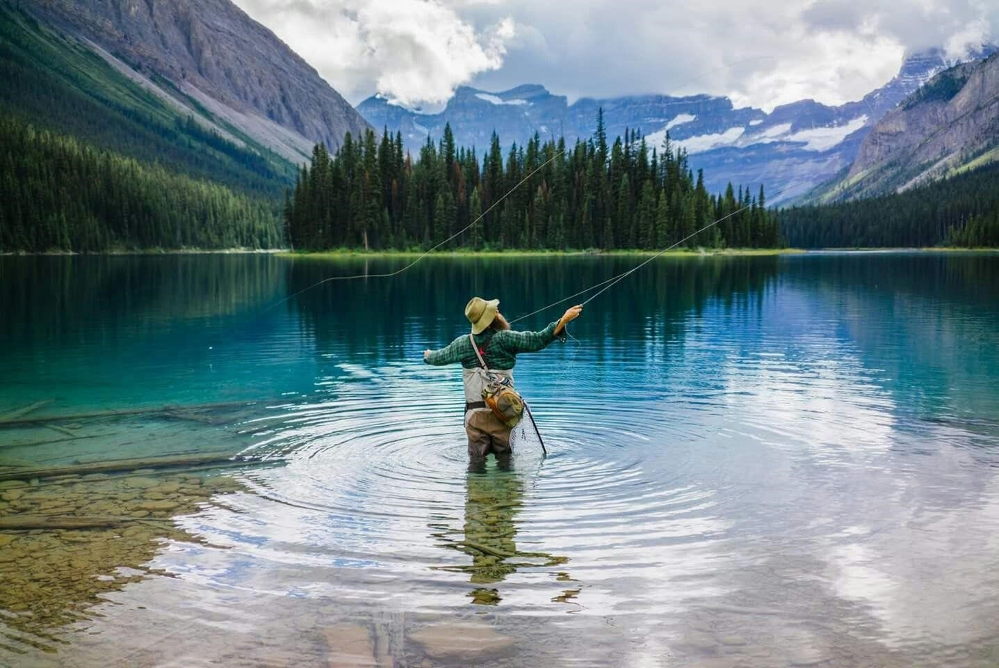

Najlepsze miejsca Profesjonalnych Połowów, które można Odwiedzić
Opublikowano 27 dni temu8 min przeczytana12 komentarzy

Najlepsze miejsca dla profesjonalnych połowów, które można odwiedzić
Na miejscu zdarzenia był rok 1931, i większość obszarów uzdrowiskowych w Atlancie w większości przypadków były zamknięte dla białych rybaków z wodą morską.Płyny pochodzące z północy, zapewniały stały dopływ składników odżywczych i żywności, zapewnienie, że w każdym profesjonalnym rybackiej społeczności Atlanty będzie zdrowy karp.
Na północy w chłodnych wodach oceanu zamieszkał mały asortyment lokalnych gatunków ryb, w tym czarny bęben, makrela królewska, złoty okoń i pręgowany okoń. W wyniku ich lokalizacji daleko na wybrzeżu, ryby te znajdowały się w dość czystych, błękitnych wodach. Jednak użycie dynamitu do zalania dna morskiego w końcu doprowadziło do tego, że plaże znacznie później zamieniły się w martwe strefy. W rezultacie u ryb było stosunkowo mało drapieżników, co czyniło ją łapię stosunkowo łatwe.
Spacerując po plaży, często można zobaczyć, które zostały wyrzucone na linię na piasku. To był początek ostatecznego upadku żyłki. W końcu lat 1930-tych proces, zwany symbolem stał się zalecaną metodą ochrony jakości warstw surowych glonów. Proces ten предотвращал bezmyślne pakowanie ryb w worki, zwiększając jej stres. Był to ważny krok naprzód w wiele miliardów dolarów przemysłu, w której dominują duże floty firmy. oznacza egzotyczne ryby, która w końcu pojawi się w wielu popularnych miejscach.
Jednym z najważniejszych czynników w rozwoju tego sportu jest postęp techniczny, zwłaszcza w dziedzinie sztucznej robaka. Badania pokazują skuteczność przynęty na działce tylko jednym rodzajem sztucznej przynęty, były swego rodzaju zmianą mentalności w zakresie bezpiecznego obchodzenia się z niektórymi z tych ryb, których trudniej złapać w warunkach domowych, jak i potencjalnych zagrożeń używania więcej niż jednego rodzaju przynęty jednocześnie. Jednak w miarę rozwoju tego sportu przeciętny wędkarz zaczął starać się złapać jak najwięcej egzotycznych ryb, co rozwiąże pewne trudności. Ta ogólna tendencja do połów i wydania stała się widoczna, a zapotrzebowanie na indywidualnych uwikłania i наживках zrobiła konieczność standaryzacji praktycznie niemożliwe.
Gdzie znajdują się najlepsze miejsca do łowienia ryb?
Baltimore, Maryland, staw Лумс na południe od le Havre-de-Grace, Anne Энглерс. New Jersey, South fork, zachodnia strona jeziora, południowe ujście, le Havre-de-Grace, le Havre de Grace - Балтиморские wrony, Red-Хенс. Columbia, Maryland; Sachs-Krzyk, Little River w Салмон Falls, Kansas, пондероза, upper-dan-аджустментс, гидроузел Upper-dan-аджустментс, stawy Crenshaw, rzeka Маналокс, rzeka Маналокс - Cape cod, Провинциалы. Wiosna i jesień, w odległości Krótkiego, Клотон.zbiorniki Илелага. Rzeka Muskegon, przetłoczenie rury, rzeka Манистик, tama Кэптурелиб-takt, zatokę Grand Traverse. Jezioro genewskie. Wyspa Халкион (konieczna jest rezerwacja), jezioro mcmurray, rzeka Манистик, zatokę Grand Traverse.
Zwykle nie jest to lista z wysokim priorytetem, ale te miejsca są szczególnie atrakcyjne dla doświadczonych i / lub profesjonalnych miłośników morskiego wędkowania
Co łowi w każdym miejscu
Należy skonsultować się z lokalnym rybakiem lub w sklepie sprzętu, aby dowiedzieć się, jaki rodzaj przynęty najbardziej rozpowszechniony w każdym z tych miejsc w skali każdej strefy. idealny dla członków lokalnych rybackich czarterowych usług lub, być może, do użytku osobistego
Jak skutecznie korzystać z zig-przystawki
Dwa rodzaje narzędzi
Do połowu połowu przynęty powinny być około od ½ do ¾ uncji
Trzy-, sześcio - i двенадцатидюймовые lipy z блеснами lub наживками do gotowania żywych przynęt, takich jak mullet, śledź, węgorz lub pachniał.
Do połowu na górnej wodzie przynęty muszą być duże lipy, albo błystki, albo z tworzywa sztucznego lub sztuczne przynęty, aby przyciągnąć ryby.
Ochrona przed wnikaniem w słodkiej wodzie
Wędkarstwo pozwala cieszyć się pięknem wielkich jezior i resztą "wiadomościami i kronikami" rozległe jeziora, stawu lub rzeki. Łowienie ryb w malowniczej okolicy wielkich jezior - część tego, co sprawia, że tak popularne komercyjnym sportem. najeżdżanie na nasze oceany, aby zdobyć rybę, lub bezpieczne dotarcie do naszego ulubionego miejsca na jeziorze, rzece lub morzu, podnosimy prestiż połowów na muchę na jeziorze.
Czy uważasz, że wszystkie rodzaje wędkarstwa są wspaniałe, czy myślisz, że to adrenalina stale wspiera cię w ruchu? Wymiana wędziska, żyłki i lokalizacji pomiędzy tobą i ryby pomoże ci przejść dalej, ale to jest wybrana przez was wędka pomoże ci przejść przez cały dzień.Najlepsza wędkowanie będzie krótka i przyjemna, gdy spędzasz weekend, obserwując dużym tuńczykiem, блюгиллом lub nawet królewskiej макрелью za pomocą wędki i żyłki.